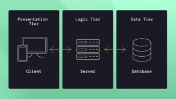

Multitier Architecture (also called n-tier architecture) is a design model for web applications in which different functions of the application are separated into distinct layers or "tiers." Each tier handles a specific responsibility and communicates with the layers above and below it.
The three-tier model is the most widely used:
This is the user-facing layer — what the user sees and interacts with. It is typically the web browser displaying HTML, CSS, and JavaScript. Its job is to present information to the user and collect their input.
This is the middle layer, often called the logic layer or server layer. It processes user requests, applies business rules, and communicates between the presentation and data layers. This is where the core functionality of the application lives (e.g., calculating, validating, processing).
This is where data is stored and managed. It contains the database (e.g., MySQL, PostgreSQL, Oracle). The application layer queries this layer to retrieve or store information.
When you log into a banking website: the browser (Tier 1) sends your credentials → the application server (Tier 2) verifies your identity and applies rules → the database (Tier 3) retrieves your account details → the information travels back and is displayed in your browser.

Figure: Three-tier architecture separating the presentation, application logic, and data storage layers.